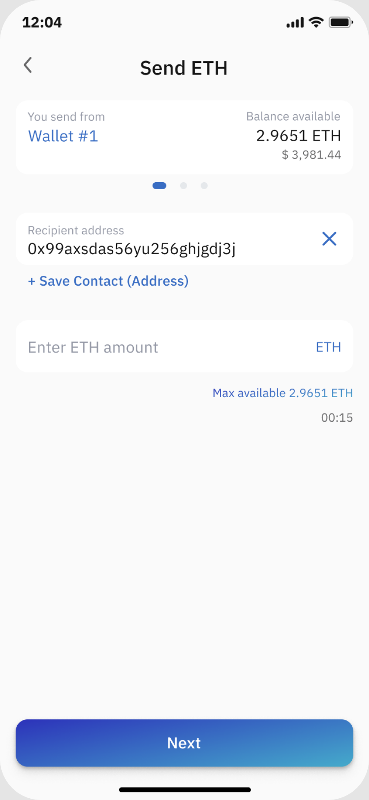

Сохранение контактов
Контакты в кошельке были мёртвой фичей: их никто не заводил и не использовал. Я встроила их в тот момент, где адрес действительно нужен — в отправку.

Фича была, пользы не было
Раздел контактов существовал отдельно от отправки: чтобы сохранить адрес, нужно было выйти из сценария, вспомнить название и вернуться обратно. В итоге адреса копировали из переписок и истории транзакций.
Сохранять там, где отправляешь
После ввода адреса пользователь сразу получает предложение назвать и сохранить получателя — без ухода из отправки и без отдельного раздела.
На первом шаге Send — быстрый выбор из сохранённых: имя, сеть и короткий адрес, поиск по списку при большом количестве контактов.
Состояния: пусто, первый контакт, много контактов, дубли и похожие адреса. На каждое — свой экран и понятная подсказка.
Контакт как часть отправки
Список получателей на первом экране Send, карточка контакта с сетью и адресом, безопасные состояния для похожих адресов. Компоненты собраны на дизайн-системе продукта и переданы в разработку с прототипом.
Мелочи, которые снимают страх
Подписи вместо длинных адресов, подтверждение перед первой отправкой на новый адрес, понятные ошибки вместо системных кодов. Отдельно проверили сценарий с несколькими сетями, чтобы пользователь не отправил монеты не туда.
Каждое состояние описано текстом: что произошло, чем это грозит и что делать дальше. UX-тексты писала сама и согласовывала вместе с саппортом.
Контакты перестали быть мёртвой фичей и начали работать в Send-флоу
Куда развивать дальше
Замерить долю отправок из сохранённых контактов и время до подтверждения — сейчас данных по фиче не хватает.
Добавить импорт адресов из истории и обмен контактом ссылкой, чтобы не вводить адрес вручную вообще.
Помечать адреса, на которые уже были успешные отправки, и предупреждать о похожих — меньше страха ошибиться.
Спасибо, что дочитали
Если хочется подробностей по флоу и решениям — напишите, покажу макеты и прототип и расскажу, что не поместилось в кейс.